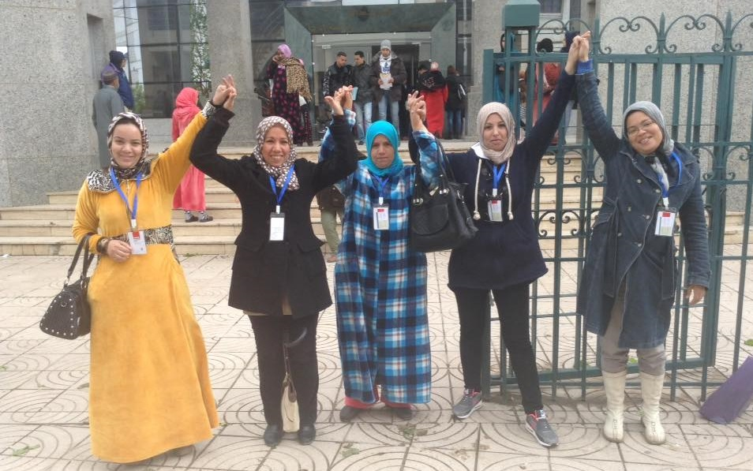
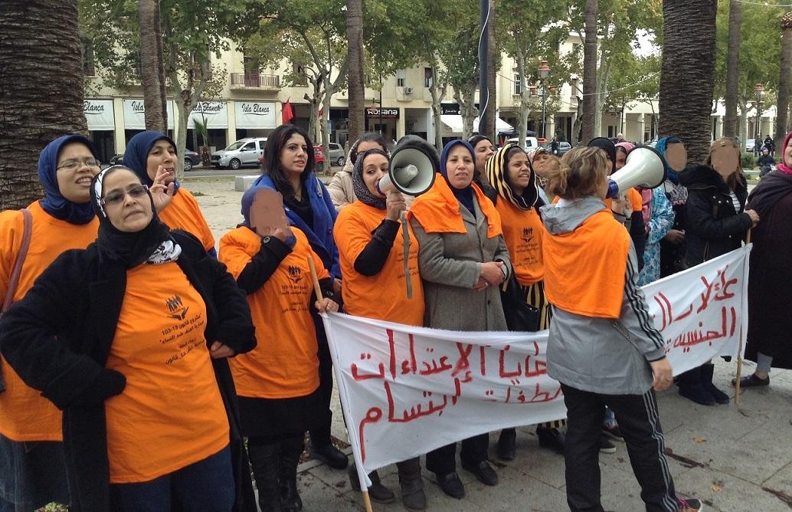

Groupes d'entraide et de veille communautaires
Pourquoi mettre en œuvre ce projet?
- L’association IPDF a réalisé un rapport sur la base de l’analyse des déclarations des jeunes femmes victimes de violence usagères de son « centre Batha pour l’autonomisation des femmes ».cette analyse qui a couvert 15 quartiers précaires de la ville de Fès a révélé, entre autres, un lien entre la zone d’habitation de ces femmes et leur capacité d’aller au bout de leur démarches juridiques ou d’insertion économique. Le rapport a mis en lumière l’impact du territoire, de l’agencement de ses services, de ses voiries et ses transports sur le processus d’autonomisation individuelle et collective des femmes, leur accès à l’éducation, aux ressources, à la santé sexuelle et reproductive….
- Les groupes d'entraide peuvent aider à impliquer les femmes dans les questions liées à leurs quartiers en leur offrant un espace pour exprimer leurs préoccupations et idées. Cela peut encourager leur participation active dans les discussions sur la planification urbaine et la gestion de leur environnement.
- En tant qu’usagère du quartier et de ses ressources, les femmes ont développé une « expertise de citoyenne » qui peut être utile dans la conception des politiques locales. Elles ont souvent une connaissance approfondie de leurs quartiers, ses problèmes, et ses besoins. Elles sont également plus sensibles à certains enjeux tels que la sécurité, les espaces verts, les transports en commun, l’accès aux services, etc. Valoriser cette expertise et en tirer parti pourrait permettre aux politiques locales d’être mieux adaptées aux besoins des habitantes, plus innovantes, plus inclusives, et plus efficace. Cela peut contribuer à rendre nos quartiers plus agréables à vivre, plus sûrs, plus abordables, et plus résilients.
En quoi consiste ce projet?
Le projet permettra aux femmes de quartiers sensibles de la ville de Fès de devenir des leaders et des citoyennes actives et engagées dans leur communauté, et de créer des groupes d’entraide et de veille communautaire.
Les activités du projet contribueront à l'autonomisation/empowerment de ces femmes au niveau individuel et collectif en leur fournissant des ressources et des outils pour développer leur rôle dans la communauté. Et ce via :
- des stratégies d’information (droits à la santé sexuelle et reproductive, droits des femmes, etc.),
- des stratégies de formation/capacitation (renforcement de capacité en leadership, en communication, en plaidoyer, et en mobilisation communautaire).
- des stratégies de réseautage et mise en place de groupes d’entraide (identification d’objectifs commun, accompagnement à la conception de plans d’action et initiatives locales collectives visant à promouvoir l'égalité des genres dans leurs quartiers et dans la ville de Fès ).
Activités du projet
Résultats prévues du projet
- Au moins 12 groupes d'entraide et de veille communautaire auront été créés par les habitantes des quartiers précaires de Fès au cours des 3 prochaines années.
- Les groupes d’entraide d’habitantes auront conçus des projets collectifs, grâce à l’accompagnement prévus dans le cadre du projet.
- Les groupes d’entraide auront contribué à la promotion de l'égalité des sexes et de la lutte contre les discriminations, grâce à des campagnes de sensibilisation menées par les femmes dans 12 quartiers de la ville de Fès.
- Les groupes auront permis de renforcer les liens entre les habitantes des quartiers précaires et les autres acteurs locaux, favorisant ainsi la participation des femmes à la vie sociale et politique de la ville.
Couverture médiatique
- Lancement du groupe d’entraide « nous sommes devenues militantes » :lire l’article sur alyaoum24
Soutenez le programme
Nous avons besoin de votre soutien pour continuer notre travail. Votre don nous aidera à poursuivre nos actions en faveur de l'égalité des genres et de l'autonomisation des femmes.
Mobilisation communautaire
Le groupe d’entraide « wlina mounadilates », constitué par des ex usagères du Centre Multifonctionnel Batha pour l’Autonomisation des Femmes (géré par l’association IPDF) a organisé une compagne de soutien à la fille Ibtissam. Enfant de 9ans victime d’une agression sexuelle.Marche exploratoire
L’association IPDF a réalisé un « diagnostic urbain participatif » des quartiers louisates et sahrij Gnaoua. Cette démarche a été réalisée par IPDF avec le groupe d’entraide « wlina mounadilates », et des habitantes des deux quartiers.
Le diagnostic a permis à l’association d’identifier les zones à risque le long des trajets de 2 kilomètre qui les mènent aux arrêts de bus les plus proches (à Bab Ftouh). Récolter les vécus, et les expériences, et les recommandations des habitantes par rapport à ces trajets.
Le rapport de ce diagnostic a été présenté lors du séminaire « Fès, ville sure pour les femmes et les filles », organisée par l’association IPDF et la commune de Fès, avec l’appui de l’ONU Femmes.

Participation des groupes d'entraide aux dynamiques nationales de plaidoyer
Les membres des « groupes d’entraide et de veille communautaires », constitué par des femmes victimes de violences grâce à l’appui de l’association IPDF, ont participé activement aux compagnes de plaidoyer pour une législation qui prohibe les violences fondées sur le genre.Exposition : le Maroc qu'on veut
Le groupe d’entraide « wlina mounadilates » constitué par des ex usagères du Centre Multifonctionnel Batha pour l’Autonomisation des Femmes (géré par l’association IPDF) a organisé une exposition artistique de leurs œuvres de sensibilisation « le Maroc que nous voulons ».Ateliers d'accompagnements à la création des groupes d'entraide
Des femmes victimes de violences, usagères du centre multifonctionnel Batha pour l’autonomisation des femmes (géré par notre association IPDF), ont été accompagnées dans la création d’un groupe d’entraide et de veille communautaire nommé « nous sommes devenues militantes ».
Lors de cette démarche, nous nous sommes appuyés sur des méthodes innovantes mêlant l’art aux groupes de discussion, pour aider les participantes à trouver des consensus sur la mission, les objectifs, et les activités à mettre en œuvre par les groupes.
Cet accompagnement d’une durée de 12 mois à abouti sur la création du groupe « nous somme devenues militantes ».